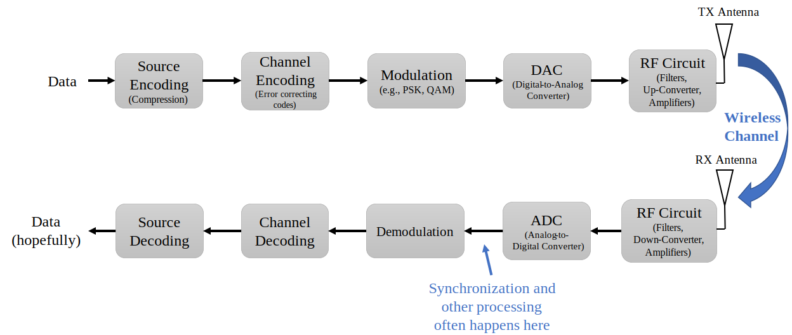
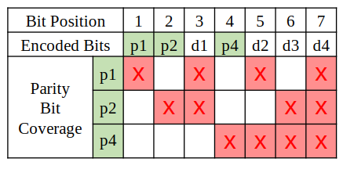
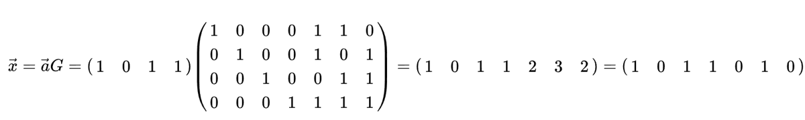
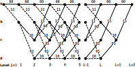
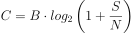
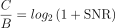
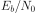
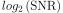
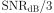
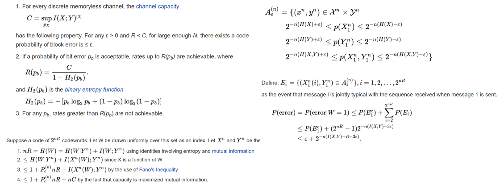

10. Codage Canal¶
Dans ce chapitre, nous présentons les bases du codage de canal, c’est-à-dire les codes correcteurs d’erreur (FEC pour Forward Error Correction en anglais), la limite de Shannon, les codes de Hamming, les turbo-codes et les codes LDPC. Le codage de canal est un domaine énorme dans les communications sans fil, et est une branche de la “théorie de l’information”, qui est l’étude de la quantification, du stockage et de la communication de l’information.
Pourquoi nous avons besoin du codage des canaux¶
Comme nous l’avons appris dans le chapitre Ruis en dB, les canaux sans fil sont bruyants, et nos symboles numériques n’atteindront pas parfaitement le récepteur. Si vous avez suivi un cours des réseaux, vous connaissez peut-être déjà les contrôles de redondance cyclique (CRC pour cyclic redundancy checks en anglais), qui détectent les erreurs au niveau de la réception. L’objectif du codage de canal est de détecter et de corriger les erreurs au niveau du récepteur. Si nous laissons une certaine marge d’erreur, nous pouvons transmettre avec un système de modulation d’ordre supérieur par exemple, sans que la liaison soit rompue. À titre d’exemple visuel, considérez les constellations suivantes montrant une QPSK (à gauche) et une 16QAM (à droite) avec la même quantité de bruit. La QPSK fournit 2 bits par symbole, tandis que la 16QAM offre un débit deux fois plus élevé avec 4 bits par symbole. Mais notez comment dans la constellation QPSK, les symboles ont tendance à ne pas dépasse pas les frontières de décision des symboles, ou l’axe des x et l’axe des y, ce qui signifie que les symboles seront reçus correctement. En revanche, dans le tracé de la constellation 16QAM, il y a un chevauchement des groupes de points et, par conséquent, de nombreux symboles seront mal reçus.

Un échec du CRC entraîne généralement une retransmission, du moins lorsqu’on utilise un protocole comme TCP. Si Alice envoie un message à Bob, il est préférable que Bob n’ait pas à renvoyer un message à Alice pour demander à nouveau l’information. Le but du codage de canal est de transmettre des informations redondantes. La redondance est une sécurité qui réduit le nombre de paquets erronés, de retransmissions ou de données perdues.
Nous avons vu pourquoi nous avons besoin du codage de canal, voyons donc où il intervient dans la chaîne de transmission-réception :
Observez qu’il y a plusieurs étapes de codage dans la chaîne d’émission-réception. Le codage source, notre première étape, n’est pas la même que le codage du canal; le codagesource a pour but de compresser les données à transmettre autant que possible, tout comme lorsque vous zippez des fichiers pour réduire l’espace occupé. En d’autres termes, la sortie du bloc de codage de la source doit être plus petite que l’entrée des données, mais la sortie du codage du canal sera plus grande que son entrée car la redondance est ajoutée.
Types de Codes¶
Pour effectuer le codage du canal, nous utilisons un “code de correction d’erreur”. Ce code nous dit, étant donné les bits que nous devons transmettre, quels sont les bits que nous transmettons réellement? Le code le plus élémentaire est appelé “code de répétition”, et il consiste à répéter simplement un bit N fois de suite. Pour le code de répétition-3, on transmet chaque bit trois fois :
- 0 → 000
- 1 → 111
Le message 10010110 est transmis sous la forme 111000000111000111111000 après codage du canal.
Certains codes fonctionnent sur des “blocs” de bits d’entrée, tandis que d’autres utilisent une approche par flux continu. Les codes qui fonctionnent sur des blocs, c’est-à-dire des données d’une longueur définie, sont appelés “codes blocs”, tandis que les codes qui fonctionnent sur un flux de bits, où la longueur des données est arbitraire, sont appelés “codes convolutifs”. Ce sont les deux principaux types de codes. Notre code de répétition-3 est un code de bloc où chaque bloc est de trois bits.
Soit dit en passant, ces codes de correction d’erreurs ne sont pas uniquement utilisés dans le codage des canaux pour les liaisons sans fil. Vous avez déjà stocké des informations sur un disque dur ou un SSD et vous vous êtes demandé comment il n’y avait jamais d’erreurs de bits lors de la relecture des informations? L’écriture, puis la lecture, de la mémoire est similaire à un système de communication. Les contrôleurs de disques durs et de disques SSD intègrent la correction d’erreurs. Elle est transparente pour le système d’exploitation et peut être propriétaire puisqu’elle est intégrée au disque dur/SSD. Pour les supports portables comme les CD, la correction d’erreurs doit être normalisée. Les codes Reed-Solomon étaient courants dans les CD-ROM.
Rendement de Code¶
Toute correction d’erreur comprend une forme de redondance. Cela signifie que si nous voulons transmettre 100 bits d’information, nous devrons en fait envoyer plus que 100 bits. Le “débit de code” est le rapport entre le nombre de bits d’information et le nombre total de bits envoyés (c’est-à-dire les bits d’information plus les bits de redondance). Pour en revenir à l’exemple du codage par répétition-3, si je dispose de 100 bits d’information, nous pouvons déterminer ce qui suit :
- 300 bits sont envoyés
- Seuls 100 bits représentent une information
- Taux de codage = 100/300 = 1/3
Le taux de codage sera toujours inférieur à 1, car il existe un compromis entre la redondance et le débit. Un taux de codage plus faible signifie plus de redondance et moins de débit.
Modulation et Codage¶
Dans le chapitre Modulation numérique, nous avons abordé le bruit dans les schémas de modulation. Pour un SNR (rapport signal à bruit) faible, vous avez besoin d’un schéma de modulation d’ordre faible (par exemple, QPSK) pour faire face au bruit, et pour un SNR élevé, vous pouvez utiliser une modulation comme 256QAM pour envoyer plus de bits par seconde. Il en va de même pour le codage du canal: vous souhaitez des taux de codage plus faibles à des SNR faibles, et à des SNR élevés, vous pouvez utiliser un taux de codage proche de 1. Les systèmes de communication modernes disposent d’un ensemble de schémas de modulation et de codage combinés, appelés MCS (pour modulations and coding schemes) en anglais. Chaque MCS spécifie un schéma de modulation et un schéma de codage à utiliser à des niveaux de SNR spécifiques.
Les communications modernes modifient de manière adaptative le MCS en temps réel en fonction des conditions du canal sans fil. Le récepteur envoie un retour d’information sur la qualité du canal à l’émetteur. Le retour d’information doit être partagé avant que la qualité du canal sans fil ne change, ce qui peut être de l’ordre de la ms. Ce processus adaptatif permet d’obtenir le meilleur débit de communication possible et est utilisé par les technologies modernes telles que LTE, 5G et WiFi. Ci-dessous, une visualisation d’une tour cellulaire changeant de MCS pendant la transmission en fonction de la distance entre l’utilisateur et la cellule.

Lorsque vous utilisez un MCS adaptatif, si vous tracez le débit en fonction du SNR, vous obtenez une courbe en forme d’escalier comme le graphique ci-dessous. Les protocoles comme LTE ont souvent un tableau indiquant quel MCS doit être utilisé à quel SNR.

Code de Hamming¶
Examinons un simple code correcteur d’erreurs. Le code de Hamming a été le premier code non trivial développé. À la fin des années 1940, Richard Hamming travaillait aux Bell Labs et utilisait un ordinateur électromécanique qui utilisait des bandes de papier perforé. Lorsque des erreurs étaient détectées dans la machine, celle-ci s’arrêtait et les opérateurs devaient les corriger. Hamming a été frustré de devoir recommencer ses programmes à partir de zéro à cause des erreurs détectées. Il s’est dit : “Bon sang, si la machine peut détecter une erreur, pourquoi ne peut-elle pas localiser la position de l’erreur et la corriger?”. Il a passé les années suivantes à développer le code de Hamming pour que l’ordinateur puisse faire exactement cela.
Dans les codes de Hamming, des bits supplémentaires, appelés bits de parité ou bits de contrôle, sont ajoutés aux informations pour assurer la redondance. Toutes les positions binaires qui sont des puissances de deux sont des bits de parité: 1, 2, 4, 8, etc. Les autres positions binaires sont destinées à l’information. Le tableau situé sous ce paragraphe met en évidence les bits de parité en vert. Chaque bit de parité “couvre” tous les bits où le ET binaire de la parité et de la position du bit est différent de zéro, marqué d’un X rouge ci-dessous. Si nous voulons utiliser un bit de données, nous avons besoin des bits de parité qui le couvrent. Pour pouvoir aller jusqu’au bit de données d9, nous avons besoin du bit de parité p8 et de tous les bits de parité qui le précèdent. Cette table nous indique donc le nombre de bits de parité dont nous avons besoin pour un certain nombre de bits. Ce schéma se poursuit indéfiniment.

Les codes de Hamming sont des codes de bloc, ils fonctionnent donc sur N bits de données à la fois. Ainsi, avec trois bits de parité, nous pouvons opérer sur des blocs de quatre bits de données à la fois. Nous représentons ce schéma de codage d’erreur par Hamming(7,4), où le premier argument est le nombre total de bits transmis et le second argument est le nombre de bits de données.
Voici trois propriétés importantes des codes de Hamming :
- Le nombre minimal de changements de bits nécessaires pour passer d’un mot de code quelconque à un autre mot de code quelconque est de trois.
- Il peut corriger les erreurs d’un bit
- Il peut détecter mais pas corriger les erreurs de deux bits
D’un point de vue algorithmique, le processus de codage peut être réalisé à l’aide d’une simple multiplication matricielle, en utilisant ce que l’on appelle la “matrice génératrice”. Dans l’exemple ci-dessous, le vecteur 1011 représente les données à coder, c’est-à-dire les informations que nous voulons envoyer au récepteur. La matrice 2D est la matrice génératrice, et elle définit le schéma de codage. Le résultat de la multiplication fournit le mot de code à transmettre.
{kind=link}
L’intérêt de se plonger dans les codes de Hamming était de donner un aperçu du fonctionnement du codage des erreurs. Les codes en bloc ont tendance à suivre ce type de schéma. Les codes convolutifs fonctionnent différemment, mais nous ne nous y attarderons pas ici ; ils utilisent souvent un décodage de type Trellis, qui peut être représenté par un diagramme ressemblant à celui-ci:
Décodage souple ou dur¶
Rappelons qu’au niveau du récepteur, la démodulation intervient avant le décodage. Le démodulateur peut nous dire quel symbole a été envoyé, ou il peut nous donner la valeur “souple”. Pour la BPSK, au lieu de nous dire 1 ou 0, le démodulateur peut dire 0.3423 ou -1.1234, quelle que soit la valeur “souple” du symbole. En général, le décodage est conçu pour utiliser des valeurs dures ou souples.
- Décodage à décision souple - utilise les valeurs souples.
- Décodage à décision dure - utilise uniquement les 1 et les 0.
Les codes souples sont plus robustes parce que vous utilisez toutes les informations à votre disposition, mais ils sont aussi beaucoup plus compliqués à mettre en œuvre. Les codes de Hamming dont nous avons parlé utilisaient des décisions dures, alors que les codes convolutifs ont tendance à utiliser des décisions souples.
Limit de Shannon¶
La limite de Shannon ou capacité de Shannon est un incroyable élément de théorie qui nous indique combien de bits par seconde d’informations sans erreur nous pouvons envoyer :

- C - Capacité du canal [bits/sec]
- B - Largeur de bande du canal [Hz].
- S - Puissance moyenne du signal reçu [watts].
- N - Puissance moyenne du bruit [watts].
Cette équation représente ce que tout schéma MCS peut faire de mieux lorsqu’il fonctionne à un rapport signal/bruit suffisamment élevé pour être exempt d’erreurs. Il est plus logique de représenter la limite en bits/sec/Hz, c’est-à-dire en bits/sec par quantité de spectre:

avec SNR en termes linéaires (et non en dB). Cependant, lors de la représentation graphique, nous représentons généralement le SNR en dB pour des raisons de commodité:

Si vous voyez ailleurs des courbes de limites de Shannon qui ont l’air un peu différents, ils utilisent probablement un axe x en terme “d’énergie par bit” ou , qui est juste une alternative au SNR.
Il pourrait aider à simplifier les choses de réaliser que lorsque le SNR est assez élevé (par exemple, 10 dB ou plus), la limite de Shannon peut être approximée comme , qui est approximativement  (expliqué ici). Par exemple, avec un rapport signal à bruit de 24 dB, vous obtenez 8 bits/seconde/Hz, donc si vous avez 1 MHz à utiliser, cela représente 8 Mbps. Vous vous dites peut-être que ce n’est qu’une limite théorique, mais les communications modernes sont assez proches de cette limite, ce qui vous donne au moins une idée approximative. Vous pouvez toujours diviser ce chiffre par deux pour tenir compte de les champs additionnels dans les paquets/trames et d’un schéma MCS sous optimal.
Le débit maximal du WiFi 802.11n fonctionnant dans la bande 2.4 GHz (qui utilise des canaux de 20 MHz de large), suivant les spécifications, est de 300 Mbps. Il est évident que vous pourriez vous asseoir juste à côté de votre routeur et obtenir un rapport signal/bruit extrêmement élevé, peut-être 60 dB, mais pour être fiable/pratique, le débit maximal MCS (rappelez-vous la courbe en escalier ci-dessus) ne nécessitera probablement pas un rapport signal/bruit aussi élevé. Vous pouvez même jeter un coup d’oeil à la liste MCS pour 802.11n. 802.11n va jusqu’à 64-QAM, et combiné avec le codage de canal, il nécessite un SNR autour de 25 dB selon ce tableau. Cela signifie que, même avec un SNR de 60 dB, votre WiFi utilisera toujours la 64-QAM. Donc, à 25 dB, la limite de Shannon est d’environ 8.3 bits/sec/Hz, ce qui, compte tenu de 20 MHz de spectre, représente 166 Mbps. Cependant, si vous tenez compte de la technologie MIMO, que nous aborderons dans un prochain chapitre, vous pouvez obtenir quatre de ces flux en parallèle, ce qui donne 664 Mbps. En divisant ce chiffre par deux, vous obtenez un résultat très proche de la vitesse maximale annoncée de 300 Mbps pour le WiFi 802.11n dans la bande 2.4 GHz.
La preuve de la limite de Shannon est assez folle; elle implique des calculs qui ressemblent à ceci:
{kind=link}
Pour plus d’informations, voir ici.
Codes de l’état de l’art¶
Actuellement, les meilleurs schémas de codage de canal sont :
- Les turbo-codes, utilisés en 3G, 4G, et dans les vaisseaux spatiaux de la NASA.
- Les codes LDPC, utilisés dans la DVB-S2, le WiMAX, l’IEEE 802.11n.
Ces deux codes s’approchent de la limite de Shannon (c’est-à-dire qu’ils l’atteignent presque sous certains SNR). Les codes de Hamming et d’autres codes plus simples sont loin d’atteindre la limite de Shannon. Du point de vue recherche, il n’y a plus beaucoup de possibilités d’amélioration des codes eux-mêmes. La recherche actuelle se concentre davantage sur l’amélioration de l’efficacité du décodage en termes de complexité et sur l’adaptation avec un canal retour.
Les codes à contrôle de parité à faible densité (LDPC pour Low Density Parity Check) sont une classe de codes en bloc linéaires très efficaces. Ils ont été introduits pour la première fois par Robert G. Gallager dans sa thèse de doctorat en 1960 au MIT. En raison de la complexité de leur mise en œuvre, ils ont été ignorés jusque dans les années 1990 ! À l’heure où nous écrivons ces lignes (2020), Gallager a 89 ans, est toujours en vie et a remporté de nombreux prix pour ses travaux (des décennies après les avoir réalisés). Le code LDPC n’est pas breveté et est donc libre d’utilisation (contrairement aux turbo-codes), c’est pourquoi il a été utilisé dans de nombreux protocoles ouverts.
Les turbo-codes sont basés sur les codes convolutifs. Il s’agit d’une classe de codes qui combine deux ou plusieurs codes convolutifs plus simples et un entrelaceur. La demande de brevet pour les turbo-codes a été déposée le 23 avril 1991. Les inventeurs étant français, et lorsque Qualcomm a voulu utiliser les turbo-codes dans le CDMA pour la 3G, elle a dû conclure un accord de licence payante avec France Télécom. Le brevet principal a expiré le 29 août 2013.